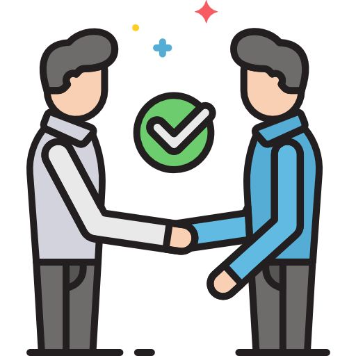
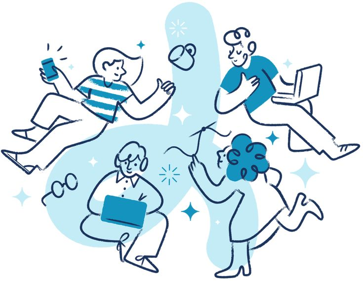

O recrutamento e seleção é uma das áreas do RH, na qual consiste em contratar a pessoa ideal para a vaga de emprego.
Para aqueles que estão, ou passarão por essa área, explicaremos oque é, como fazer o processo e melhores técnicas para um bom desempenho.
O que é?
O processo de Recrutamento e Seleção de pessoas está presente em diferentes formas na sociedade desde os primórdios do capitalismo. É um dos processos mais importantes de qualquer empresa e envolve diferentes técnicas, metodologias e etapas e vem se transformando nos últimos anos.
Recrutamento e Seleção de pessoas é um processo de Recursos Humanos, RH, focado em atrair e selecionar os Profissionais que têm maior afinidade com a vaga da empresa.
Como o próprio termo sugere, esse processo é fundamentado em duas Etapas distintas: O recrutamento e a Seleção.
Recrutamento – O que é?
Recrutamento é um subsistema do RH responsável pela atração de candidatos para vagas de emprego disponíveis em uma organização. O
Recrutamento pode ser feito tanto para vagas disponíveis no momento quanto para vagas de banco de talentos.
Uma vez que a vaga conquiste uma certa quantidade de candidatos durante o processo de recrutamento
Um ou mais candidatos serão identificados como os mais adequados para a posição durante a seleção.
Para contratar ótimos profissionais de forma objetiva e equitativa, pode ser usado na seleção:
- Testes
- Vídeos
- Entrevistas
- Dinâmicas
- Vantagem 5 – Requer pouco treinamento.
- Desvantagem 1 – Lentidão.
- Desvantagem 2 - Complexidade
Tipos de R&S
Existem diferentes formas de se fazer um processo de Recrutamento e Seleção, por isso, selecionamos os principais tipos para que você possa se familiarizar:
Recrutamento externo:
Busca no Mercado de trabalho pelo profissional ideal para a vaga em aberto.
Recrutamento interno:
Seleção dos talentos já existentes na empresa com aproveitamento das habilidades conhecidas e desenvolvidas nos departamentos
Recrutamento misto:
Quando a empresa divulga a nova oportunidade para os talentos Internos e Externos
Recrutamento às cegas:
Recrutamento que não considera as informações pessoais como critérios de seleção ou eliminação de um candidato.
Ter um bom desempenho no recrutamento e seleção como candidato envolve preparação, apresentação e atitude. Aqui estão algumas dicas para se destacar:
1. Como se manter preparado
Pesquise sobre a empresa:
Entenda a missão, valores, produtos/serviços e cultura da empresa.
Conheça a vaga:*
Leia atentamente a descrição da vaga e identifique as habilidades e experiências requeridas, pesquise e procure se aprofundar na vaga e suas especializações.
Revise seu currículo:
Adapte seu currículo para destacar as experiências e habilidades mais relevantes para a vaga, sempre o mantenha atualizado.
2. Apresentação
Currículo claro e objetivo:*
Mantenha o currículo organizado, com informações relevantes e de fácil leitura.
Manter LinkedIn ou outras ferramentas atualizadas
Certifique-se de que seu perfil no LinkedIn está atualizado e reflete suas habilidades e experiências.
3. O que fazer durante a Entrevista?:
Pontualidade
Chegue no horário marcado ou com alguns minutos de antecedência.
Vestimenta adequada:
Vista-se de maneira apropriada para o ambiente da empresa.
Comunicação clara:
Responda às perguntas de maneira clara e objetiva, sem divagações.
Perguntas inteligentes:
Prepare algumas perguntas sobre a empresa e a vaga. Isso demonstra interesse e preparação.
Como se portar ao final da R&S?
Confiança:
Mantenha uma postura confiante, mas sem arrogância.
Positividade:
Seja positivo e mostre entusiasmo pela oportunidade.
Flexibilidade
Esteja aberto a discutir diferentes aspectos da vaga e mostrar flexibilidade.
Agradecimento
Envie um e-mail de agradecimento após a entrevista, reiterando seu interesse pela vaga e agradecendo pela oportunidade.
Seguindo essas dicas, você aumentará suas chances para conquistar a vaga a qual tanto sonha.